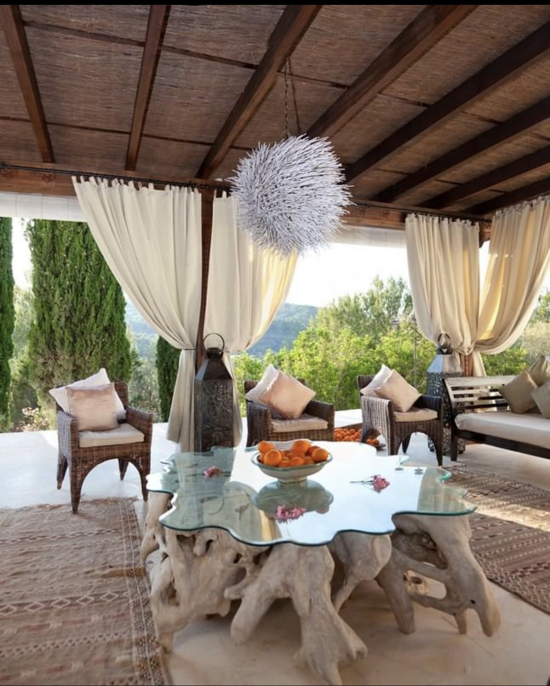
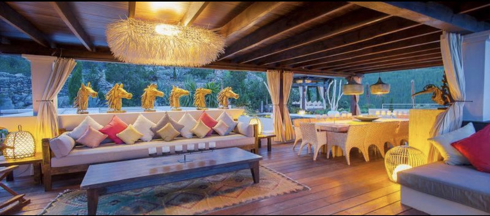

RESTAURANTE BENIRRAS
El Restaurante del Hostal Benirras cuenta con varios sectores para que puedas disfrutar de la tradicional comida ibicenca en un ambiente acogedor, rodeado de naturaleza



El Restaurante del Hostal Benirras cuenta con varios sectores para que puedas disfrutar de la tradicional comida ibicenca en un ambiente acogedor, rodeado de naturaleza